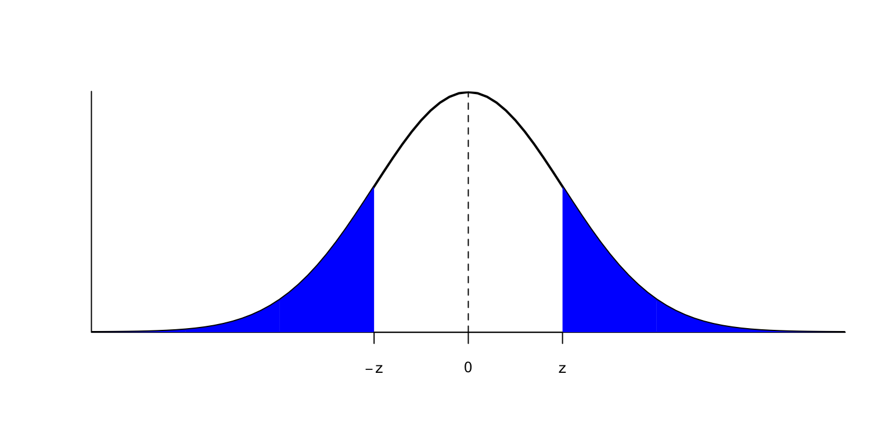

Lección 1 Contrastes de hipótesis
En muchas situaciones, queremos tomar una decisión sobre si podemos aceptar o rechazar una hipótesis sobre el valor de un parámetro en una o varias poblaciones. Para tomarla, nos basaremos en los datos de una muestra. Por ejemplo:
Queremos saber si una moneda está trucada a favor de cara.
Para decidirlo, la lanzamos varias veces y contamos cuántas caras salen.
Queremos decidir si un tratamiento nuevo A es más efectivo que el tratamiento anterior B en la curación de una enfermedad X.
Para decidirlo, llevamos a cabo un ensayo clínico, tratando con A un grupo de enfermos y con B otro grupo de enfermos, y comparamos la tasa de curación de los tratamientos sobre estos dos grupos.
El método estadístico que se usa para aceptar o rechazar una hipótesis a partir de los datos de una muestra recibe el nombre de contraste de hipótesis.
1.1 Hipótesis nula y alternativa
En un contraste de hipótesis, se comparan siempre dos hipótesis alternativas: la hipótesis nula \(H_{0}\) y la hipótesis alternativa \(H_{1}\). Se suele plantear formalmente \[ \left\{\begin{array}{ll} H_{0}:\text{hipótesis nula}\\ H_{1}:\text{hipótesis alternativa} \end{array} \right. \]
En los contrastes de hipótesis de este curso:
La hipótesis nula \(H_{0}\) es “no hay diferencia”, “no pasa nada”, “no hay nada extraño” o el equivalente en el contexto del contraste:
La moneda es equilibrada (50% de probabilidad de cara).
Los tratamientos A y B son igual de efectivos en la curación de la enfermedad X.
La hipótesis alternativa \(H_{1}\) plantea la diferencia de la que buscamos evidencia:
La moneda está trucada a favor de cara (más del 50% de probabilidad de cara).
A es más efectivo que B en la curación de la enfermedad X.
Por defecto, estamos dispuestos a aceptar \(H_0\): que no hay diferencia, que no pasa nada.
Por defecto, estamos dispuestos a aceptar que la moneda es equilibrada (la mayoría lo son, ¿no?).
Por defecto, estamos dispuestos a aceptar que los dos tratamientos son igual de efectivos (en general, si tomáis dos tratamientos al azar y una enfermedad al azar, los dos tratamientos van a ser igual de (in)efectivos sobre la enfermedad).
Si obtenemos evidencia suficiente de que \(H_0\) es falsa, rechazaremos \(H_0\) en favor de \(H_1\) y concluiremos que \(H_1\) es verdadera.
¿Qué quiere decir “obtener evidencia suficiente de que \(H_0\) es falsa”? Pues que las pruebas obtenidas hacen que \(H_0\) sea inverosímil (difícil de creer) por comparación con \(H_1\):
Tendremos evidencia de que la moneda está trucada a favor de cara si en nuestra serie de lanzamientos la proporción de caras es tan y tan grande que hace muy difícil creer que la moneda no está trucada a favor de cara.
Tendremos evidencia de que el tratamiento A es más efectivo que B en la curación de la enfermedad X si en nuestro ensayo la tasa de curación de la enfermedad X con el tratamiento A es tan y tan superior a la de B que hace muy difícil creer que los dos tratamientos sean iguales de efectivos.
Si no obtenemos evidencia suficiente de que \(H_0\) es falsa, es decir, si nuestros datos son razonablemente compatibles con \(H_0\), no podremos rechazarla. Entonces, aceptaremos la hipótesis nula.
Aceptaremos que la moneda no está trucada a favor de cara si en nuestra serie de lanzamientos la proporción de caras no es lo bastante grande como para hacer muy difícil creer que sea equilibrada
Aceptaremos que el tratamiento A es igual de efectivo que B en la curación de la enfermedad X si en nuestro ensayo la tasa de curación de la enfermedad X con el tratamiento A no es lo bastante superior a la de B como para hacer muy difícil creer que los dos tratamientos sean iguales de efectivos.
Por ejemplo, si en una secuencia de 30 lanzamientos de una moneda obtenemos todas las veces cara, seguramente lo consideraremos evidencia de que la moneda está trucada, pero no demuestra que la moneda esté trucada. Sí, cuesta creer que no esté trucada, pero no es imposible: la moneda podría ser equilibrada y por puro azar nosotros haber tenido esta racha de caras. Y tampoco podemos decir que sea improbable que sea equilibrada, puesto que nosotros sabemos calcular \[ P(\text{30 caras en 30 lanzamientos}\,|\,\text{La moneda es equilibrada})=0.5^{30} \] pero no sabemos calcular \[ P(\text{La moneda es equilibrada}\,|\,\text{30 caras en 30 lanzamientos}). \]
Por ejemplo, si en una secuencia de 4 lanzamientos de una moneda obtenemos 2 caras, tendremos que aceptar que la moneda es equilibrada. Pero podría ser que estuviera ligeramente sesgada hacia cara y no haberse notado en una secuencia tan corta de lanzamientos. Así que no hemos encontrado evidencia de que sea equilibrada, simplemente no lo podemos descartar (como no podemos descartar que la probabilidad de cara sea, yo qué sé, 0.50001).
Ejemplo 1.1 En un juicio (en el que el acusado es inocente si no se demuestra lo contrario, es decir, que estamos dispuestos a aceptar por defecto que es inocente), se busca evidencia de que el acusado es culpable. Por lo tanto, esta es la hipótesis alternativa. Así:
El contraste es \[ \left\{\begin{array}{ll} H_{0}:\text{El acusado es inocente}\\ H_{1}:\text{El acusado es culpable} \end{array} \right. \]
Se aportan pruebas.
Si el jurado encuentra las pruebas lo bastante incriminatorias, “más allá de toda duda razonable”, declara culpable el acusado (rechaza \(H_0\) en favor de \(H_1\)).
Si el jurado no las encuentra lo bastante incriminatorias, lo considera no culpable (no rechaza \(H_{0}\)).
Observad que considerar no culpable no es lo mismo que demostrar que es inocente: simplemente, se considera que el acusado no es culpable porque no se ha encontrado evidencia suficiente de que sea culpable.
Ejemplo 1.2 Un examen es un contraste de hipótesis. En este caso, “no pasa nada” significa que el estudiante es como si no hubiera ido al curso, no ha aprendido nada, y por tanto esta es la hipótesis nula. Con el examen buscamos evidencia de que el estudiante ha aprendido la materia, por lo tanto esta será la hipótesis alternativa. Así:
Contraste: \[ \left\{\begin{array}{ll} H_{0}:\text{El estudiante no sabe la materia}\\ H_{1}:\text{El estudiante sabe la materia} \end{array} \right. \]
Tomamos una muestra del conocimiento del estudiante (el estudiante hace el examen).
Si hay suficiente evidencia en favor de \(H_1\) (si el examen le sale lo bastante bien), rechazamos \(H_0\): decidimos que el estudiante sabe la materia, aprueba la asignatura.
Si no hay evidencia suficiente en favor de \(H_1\) (si el examen no le sale lo bastante bien), nos quedamos con \(H_0\): concluimos que el estudiante no ha aprendido la materia, suspende la asignatura.
Ejemplo 1.3 Una prueba diagnóstica de una enfermedad es un contraste de hipótesis. En este caso, “no pasa nada” significa que la persona está sana, y por tanto esta es la hipótesis nula. Con la prueba diagnóstica buscamos evidencia de que tiene la enfermedad, por lo tanto esta será la hipótesis alternativa. Es decir, el contraste es
\[ \left\{\begin{array}{ll} H_{0}:\text{La persona no tiene la enfermedad}\\ H_{1}:\text{La persona sí tiene la enfermedad} \end{array} \right. \]
Ejemplo 1.4 Si leemos la noticia siguiente en el diario, quede que nos preguntemos si es verdad que las mujeres practican menos deporte que los hombres.

Esta pregunta la podemos plantear de muchas maneras:
¿Toda mujer hace cada día menos horas de deporte que cualquier hombre?
Si tomo una mujer y un hombre al azar, ¿es más probable que ella practique menos deporte que él?
¿La mayoría de las mujeres hacen cada día menos horas de deporte que la mayoría de los hombres?
¿La proporción de practicantes de deporte entre las mujeres es menor que entre los hombres?
¿La media semanal de veces que las mujeres practican deporte es menor que la de los hombres?
¿La media semanal de horas que las mujeres practican deporte es menor que la de los hombres?
…
Cada una de estas preguntas se traduciría en un contraste de hipótesis diferente. Puesto que aquí estamos tratando contrastes sobre parámetros poblacionales (medias, proporciones, etc.), podríamos plantear alguno de los tres últimos contrastes. Vamos a centrarnos en la última cuestión, sobre medias semanales de horas de deporte.
En este contraste, las variables poblacionales de interés son:
\(X_m\): “Tomo una mujer y calculo su número medio de horas semanales de deporte”, con media \(\mu_m\): la media semanal de horas de deporte de las mujeres (la media de las medias de horas semanales de deporte de todas las mujeres es la media de horas semanales de deporte de las mujeres).
\(X_h\): “Tomo un hombre y calculo su número medio de horas semanales de deporte”, con media \(\mu_h\): la media semanal de horas de deporte de los hombres
El contraste que queremos realizar es
Hipótesis nula: no hay diferencia entre las medias semanales de horas de deporte de hombres y mujeres.
**Hipótesis alternativa*: la media semanal de horas de deporte de las mujeres es más pequeña que la de los hombres.
Es decir \[ \left\{\begin{array}{ll} H_{0}: \mu_m=\mu_h\\ H_{1}:\mu_m<\mu_h \end{array} \right. \]
El procedimiento para llevar a cabo este contraste sería:
Tomaríamos muestras aleatorias de mujeres y de hombres y les preguntaríamos sus hábitos de práctica de deporte.
Calcularíamos la media muestral \(\overline{X}_m\) de horas semanales de deporte de las mujeres de la muestra.
Calcularíamos la media muestral \(\overline{X}_h\) de horas semanales de deporte de los hombres de la muestra.
Si \(\overline{X}_m\) fuera mucho menor que \(\overline{X}_h\), lo tomaríamos como evidencia de que \(\mu_m<\mu_h\).
Si \(\overline{X}_m\) no fuera mucho menor que \(\overline{X}_h\), no podríamos rechazar que \(\mu_m=\mu_h\).
¿Qué significa “\(\overline{X}_m\) mucho menor que \(\overline{X}_h\)”? Una opción, que podríamos importar del tema anterior, seria calcular un intervalo de confianza del 95% para \(\mu_m-\mu_h\) a partir de la muestra. Entonces:
Si estuviera totalmente a la izquierda del 0, con un 95% de confianza podríamos concluir que \(\mu_m<\mu_h\).
En caso contrario (si contuviera el 0 o si estuviera totalmente a la derecha del 0), con un 95% de confianza no podríamos concluir que \(\mu_m<\mu_h\).
Aquí querremos afinar un poco más que lo del “nivel de confianza”, por lo que el procedimiento será algo más complicado (básicamente, la idea es que vamos a usar diferentes fórmulas para calcular los intervalos de confianza según la forma de la hipótesis alternativa).
Antes de cerrar esta sección, queremos destacar algunas advertencias.
En el ejemplo anterior, las hipótesis del contraste comparaban las medias poblacionales de horas semanales de deporte de las mujeres y los hombres, no las medias muestrales de horas semanales de deporte de las mujeres y los hombres de la muestra.
Para comparar las medias muestrales no nos hace falta un contraste de hipótesis: las calculamos y punto. En cambio, como no podemos calcular las medias semanales de horas de deporte de todas las mujeres y de todos los hombres, nos vemos obligados a hacer un contraste de hipótesis.
Si no podemos asegurar que las mujeres practiquen menos deporte que los hombres (porque no hayamos encontrado evidencia a favor de esta hipótesis), esto no significará que hayamos encontrado evidencia de que los hombres y las mujeres practiquen la misma cantidad de deporte o de que las mujeres practiquen más deporte.
Simplemente, significará que la evidencia a favor de \(H_1\) no ha sido lo bastante fuerte como para poder afirmar que es verdadera y por tanto aceptamos que ambos sexos practican de media la misma cantidad de deporte semanal.
Si por ejemplo en nuestro estudio hubiéramos encontrado que \(\overline{X}_m=\overline{X}_h\), esto sería compatible con la hipótesis nula \(\mu_m=\mu_h\), y por eso no la podríamos rechazar, pero no aportaría evidencia de que \(\mu_m=\mu_h\), puesto que seguramente también sería compatible, por ejemplo, con \(\mu_m=\mu_h+0.0007\) (las mujeres hacen, de media, un minuto más de deporte en la semana que los hombres).
La pregunta la tenemos que plantear antes de obtener la muestra. Si estamos interesados en el contraste \[ \left\{\begin{array}{ll} H_{0}: \mu_m=\mu_h\\ H_{1}:\mu_m<\mu_h \end{array} \right. \] y obtenemos que \(\overline{X}_m\) es mucho mayor que \(\overline{X}_h\) en nuestra muestra, concluimos que no tenemos evidencia que \(\mu_m<\mu_h\) y punto. Sería hacer trampas decir: “No hemos encontrado evidencia de que las mujeres practiquen menos deporte que los hombres, pero si con estos mismos datos realizamos el contraste \[ \left\{\begin{array}{ll} H_{0}: \mu_m=\mu_h\\ H_{1}:\mu_m>\mu_h \end{array} \right. \] sí que obtenemos evidencia de que ellas practican más deporte que ellos.”
De esto se dice ir a pescar evidencias o también torturar los datos: obtener unos datos y buscar de qué dan evidencia. Es mala praxis científica. Cualquier conjunto de datos, si lo torturamos lo suficiente, acaba dando evidencia de algo.
No confundáis \[ \left\{\begin{array}{ll} H_{0}: \mu_m=\mu_h\\ H_{1}:\mu_m<\mu_h \end{array} \right. \] con \[ \left\{\begin{array}{ll} H_{0}: \mu_m=\mu_h\\ H_{1}:\mu_m \neq \mu_h \end{array} \right. \] que traduce la pregunta “Los hombres y las mujeres, de media, ¿practican deporte de media un número diferente de horas semanales?”
Reglas para elegir \(H_0\) y \(H_1\) en este curso:
\(H_0\) siempre tiene que significar “no hay diferencia” y se tiene que definir formalmente mediante una igualdad.
\(H_1\) es la hipótesis de la que buscamos evidencia, y se tiene que definir formalmente mediante algo “estricto”:
Hipótesis unilateral (one-sided; también de una cola, one-tailed): definida con < o con >.
Hipótesis bilateral (two-sided; también de dos colas, two-tailed): definida con \(\mathbf{\neq}\).
Los contrastes toman el nombre del tipo de hipótesis alternativa: contraste unilateral, de dos colas, etc.
1.2 Un ejemplo
Tengo una moneda, y creo que está trucada en favor de cara. Quiero contrastarlo.
Aquí la variable aleatoria \(X\) que nos interesa es “Lanzo la moneda y miro si sale cara”, que es Bernoulli con probabilidad de éxito (es decir, probabilidad de sacar cara con mi moneda) \(p_{\mathit{Cara}}\).
La hipótesis nula será que la moneda no está trucada (no le pasa nada a mi moneda), y la alternativa (de la que busco evidencia), que la moneda está trucada en favor de cara. En términos de \(p_{\mathit{Cara}}\), el contraste es \[ \left\{\begin{array}{ll} H_{0}:p_{\mathit{Cara}}= 0.5\\ H_{1}:p_{\mathit{Cara}}> 0.5 \end{array} \right. \]
Ejemplo 1.5 Supongamos que lanzo la moneda 3 veces y obtengo 3 caras. ¿Es evidencia suficiente de que está trucada?
Llamemos \(S_3\) a la variable aleatoria “Número de caras en 3 lanzamientos de esta moneda.” Si la moneda no está trucada, \(S_3\) es binomial \(B(3,0.5)\), y por lo tanto \[ P(S_3=3)=0.5^{3}=0.125. \]
El resultado obtenido no es muy improbable con una moneda equilibrada: pasa, de media, en 1 de cada 8 secuencias de 3 lanzamientos. Por lo tanto, no creo que sea evidencia suficiente de que la moneda esté trucada. Acepto que la moneda es equilibrada.
Ejemplo 1.6 Supongamos que ahora lanzo la moneda 10 veces y obtengo 10 caras. ¿Es evidencia suficiente de que está trucada?
Llamemos \(S_{10}\) a la variable aleatoria “Número de caras en 10 lanzamientos.” Si la moneda no está trucada, \(S_{10}\) es \(B(10,0.5)\) y por lo tanto \[ P(S_{10}=10)=0.5^{10}=0.001 \]
El resultado obtenido es muy improbable si la moneda no está trucada: si la moneda fuera equilibrada, de media solo en 1 de cada 1000 secuencias de 10 lanzamientos obtendríamos 10 caras. Es decir:
El resultado de nuestro experimento sería muy raro si la moneda fuera equilibrada, por lo tanto es inverosímil que sea equilibrada.
Lo consideramos evidencia de que está trucada.
Fijaos en el procedimiento:
Hemos planteado el contraste: \[ \left\{\begin{array}{ll} H_{0}:p_{\mathit{Cara}}= 0.5\\ H_{1}:p_{\mathit{Cara}}> 0.5 \end{array} \right. \]
Hemos recogido una muestra aleatoria: la secuencia de lanzamientos.
Hemos elegido un estadístico de contraste con distribución muestral conocida cuando \(H_0\) es verdadera: en nuestro caso, el número de caras.
Hemos calculado el valor de este estadístico sobre nuestra muestra.
Hemos calculado la probabilidad de que el estadístico tome el valor observado si \(H_0\) es verdadera.
Si esta probabilidad es muy pequeña, lo consideramos evidencia de que \(H_1\) es verdadera
Si no es lo bastante pequeña, no tenemos evidencia que \(H_0\) sea falsa.
Bien, esto es lo que hemos hecho, pero no es del todo correcto. En los puntos (5) y (6) decimos que: “Calculamos la probabilidad de que el estadístico tome el valor observado si \(H_0\) es verdadera y si es muy pequeña, lo consideramos evidencia de que \(H_1\) es verdadera.” ¿Seguro que queremos hacer esto?
Supongamos que, en el contraste anterior, lanzamos la moneda 10 veces y obtenemos 10 cruces. ¿Es evidencia suficiente de que está trucada en favor de cara? Obviamente no lo puede ser, pero la probabilidad es la misma que antes: \[ P(S_{10}=0)=0.5^{10}=0.001 \]
En muchos casos, la probabilidad de obtener exactamente lo que hemos obtenido puede ser muy pequeña, independientemente de lo que hayamos obtenido. Por ejemplo, supongamos que lanzamos la moneda 10000 veces y obtenemos 5000 caras. Si la moneda es equilibrada, el número de caras seguirá una distribución binomial \(B(10000,0.5)\) y la probabilidad de obtener 5000 caras será \[ \binom{10000}{5000}0.5^{10000}=0.008 \] muy pequeña, pero claramente que la mitad de lanzamientos den cara no puede ser evidencia de que la moneda esté trucada.
O, más exagerado aún, si el estadístico de contraste es una variable continua, la probabilidad de que tome un valor concreto, el que sea, es 0. Más pequeño imposible, pero no siempre rechazaremos la hipótesis nula.
Así que:
En nuestro ejemplo de la moneda, como la hipótesis nula es \(p_{\mathit{Cara}}= 0.5\) y la hipótesis alternativa es \(p_{\mathit{Cara}}> 0.5\), el p-valor es la probabilidad de que, si \(p_{\mathit{Cara}}= 0.5\), el número de caras sea igual o mayor que el obtenido en nuestra muestra.
En los dos ejemplos anteriores concretos, donde obteníamos 3 caras en 3 lanzamientos y 10 caras en 10 lanzamientos, es lo mismo pedir que el número de caras sea igual al obtenido y pedir que el número de caras sea mayor o igual que el obtenido, porque en los dos experimentos hemos obtenido el número máximo posible de caras; por ejemplo, sacar 3 o más caras en 3 lanzamientos es exactamente lo mismo que sacar 3 caras en 3 lanzamientos. Pero en general esto no será así.
Ejemplo 1.7 Volvamos a nuestro contraste \[ \left\{\begin{array}{ll} H_{0}:p_{\mathit{Cara}}= 0.5\\ H_{1}:p_{\mathit{Cara}}> 0.5 \end{array} \right. \] Supongamos que lanzo la moneda 10 veces y obtengo 7 caras. ¿Es evidencia suficiente de que está trucada?
Seguimos llamando \(S_{10}\) a la variable aleatoria “Número de caras en 10 lanzamientos”. Si la moneda no está trucada, \(S_{10}\) es \(B(10,0.5)\). Como la hipótesis alternativa es \(p_{\mathit{Cara}}> 0.5\), “obtener un número de caras tan extremo o más que el que hemos obtenido en el sentido de la hipótesis alternativa” es sacar tantas caras como las que hemos obtenido o más, es decir sacar 7 o más caras. Por lo tanto \[ \text{p-valor}=P(S_{10}\geq 7)=1-P(S_{10}\leq 6)=\texttt{1-pbinom(6,10,0.5)}=0.172 \]
Un resultado tan o más extremo como el obtenido no es muy improbable si la moneda no está trucada: pasaría en 1 de cada 6 veces. Por lo tanto, como es bastante compatible con el hecho que la moneda sea equilibrada, no lo podemos considerar evidencia de que esté trucada a favor de cara.
Ejemplo 1.8 Tengo una moneda, y ahora creo que está trucada a favor de cruz. Quiero contrastarlo. Planteado en términos de \(p_{\mathit{Cara}}\), el contraste que quiero realizar es \[ \left\{\begin{array}{ll} H_{0}:p_{\mathit{Cara}}= 0.5\\ H_{1}: p_{\mathit{Cara}}< 0.5 \end{array} \right. \] Suponemos que lanzo la moneda 10 veces y obtengo 1 cara. ¿Es suficiente evidencia de que \(p_{\mathit{Cara}}< 0.5\)?
Seguimos llamando \(S_{10}\) a la variable aleatoria “Número de caras en 10 lanzamientos de esta moneda.” Si la moneda no está trucada, \(S_{10}\) es \(B(10,0.5)\).
Ahora, como \(H_{1}\) es \(p_{\mathit{Cara}}< 0.5\), “obtener un número de caras tan extremo o más que el que hemos obtenido, en el sentido de la hipótesis alternativa” es sacar tantas caras como las que hemos obtenido o menos, es decir sacar 1 cara o ninguna. Por lo tanto \[ \text{p-valor}=P(S_{10}\leq 1)=\texttt{pbinom(1,10,0.5)}=0.01 \] Un resultado tan o más extremo como el obtenido es muy improbable si \(p_{\mathit{Cara}}= 0.5\): de media, solo ocurre en 1 de cada 100 secuencias de 10 lanzamientos. Lo podemos considerar evidencia de que la moneda está trucada en favor de cruz.
1.3 El p-valor
El p-valor de un contraste es la probabilidad de que, si la hipótesis nula es verdadera, el estadístico de contraste tome en una muestra aleatoria simple del mismo tamaño que la nuestra un valor tan o más extremo, en el sentido de la hipótesis alternativa, que el obtenido con la muestra usada para realizar el contraste.
Lo repetimos, poniendo énfasis en los componentes fundamentales de la definición. El p-valor es:
- La probabilidad de que,
- si la hipótesis nula es verdadera,
- el estadístico de contraste tome en una muestra aleatoria simple del mismo tamaño que la nuestra
- un valor tan o más extremo, en el sentido de la hipótesis alternativa,
- que el obtenido con nuestra muestra.
Ejemplo 1.9 Supongamos que en el contraste de las medias semanales de horas de deporte de hombres y mujeres del Ejemplo 1.4 usamos como estadístico de contraste la diferencia entre las medias muestrales \(\overline{X}_m-\overline{X}_h\) (no será así: !solo es un ejemplo!), que hemos tomado muestras de 50 mujeres y de 50 hombres, y que sobre esta muestra la diferencia de medias muestrales ha sido -1.2. Entonces, el p-valor del contraste es
La probabilidad de que,
si la hipótesis nula es verdadera,
si \(\mu_m=\mu_h\), es decir, si los hombres y las mujeres practican de media el mismo número de horas de deporte a la semana,
el estadístico de contraste tome en una muestra aleatoria simple del mismo tamaño que la nuestra
el valor de \(\overline{X}_m-\overline{X}_h\), es decir, de la diferencia entre las medias muestrales de horas semanales de deporte en las mujeres y en los hombres, de una muestra aleatoria formada por 50 mujeres y 50 hombres
un valor tan o más extremo, en el sentido de la hipótesis alternativa,
sea menor o igual (porque la hipótesis alternativa es \(\mu_m<\mu_h\), es decir \(\mu_m-\mu_h<0\))
que el obtenido con nuestra muestra.
que el de nuestra muestra, -1.2.
En resumen, el p-valor seria en este caso
La probabilidad, suponiendo que \(\mu_m=\mu_h\), de que, si tomamos una muestra aleatoria de 50 mujeres y 50 hombres, el valor de \(\overline{X}_m-\overline{X}_h\) que obtengamos sea menor o igual que -1.2.
Si esta probabilidad es muy pequeña, la muestra obtenida es poco consistente con la hipótesis nula y por tanto concluiremos que la hipótesis alternativa es verdadera. Si, en cambio, esta probabilidad no es muy pequeña, la muestra obtenida es consistente con la hipótesis nula y por tanto no podremos rechazar que \(H_0\) sea verdadera.
El p-valor no es:
Ni la probabilidad de que \(H_0\) sea verdadera condicionada a nuestro resultado.
Ni la probabilidad de que \(H_1\) sea falsa condicionada a nuestro resultado.
Es al revés: El p-valor es la probabilidad de nuestro resultado (o uno más extremo) condicionada al hecho de que \(H_0\) sea verdadera. Por lo tanto, el p-valor es una evidencia indirecta inversa de \(H_1\):
Cuanto más pequeño sea el p-valor, más raro sería lo que hemos obtenido si \(H_0\) fuera verdadera y \(H_1\) falsa, y por tanto más evidencia tenemos de que \(H_0\) no puede ser verdadera y que la verdadera es \(H_1\).
Por ejemplo, si el p-valor de un contraste vale 0.03:
Significa que, si \(H_0\) es verdadera, la probabilidad de que el estadístico de contraste tome sobre una muestra un valor tan extremo o más que el que hemos obtenido es 0.03.
¿Lo encontráis pequeño? Lo tomáis como evidencia de que \(H_0\) es falsa y \(H_1\) verdadera.
¿No lo encontráis pequeño? No tenéis evidencia para rechazar que \(H_0\) es verdadera.
No significa que:
La probabilidad de que \(H_0\) sea verdadera es 0.03.
\(H_0\) es verdadera un 3% de las veces.
Ejemplo 1.10 Tengo una moneda y creo que está trucada; a favor de cara o a favor de cruz, no lo sé, solo sospecho que está trucada. Quiero contrastarlo.
Planteado en términos de la probabilidad de sacar cara \(p_{\mathit{Cara}}\), el contraste que quiero realizar ahora es \[ \left\{\begin{array}{ll} H_{0}:p_{\mathit{Cara}}= 0.5\\ H_{1}:p_{\mathit{Cara}}\neq 0.5 \end{array} \right. \] Suponemos que la lanzo 10 veces y obtengo 8 caras. ¿Es evidencia suficiente de que está trucada?
Como en la sección anterior, sea \(S_{10}\) la variable “Número de caras en 10 lanzamientos”. Si \(p_{\mathit{Cara}}= 0.5\), \(S_{10}\) es \(B(10,0.5)\).
Si la hipótesis nula fuera verdadera, esperaríamos sacar 5 caras y 5 cruces. Como la hipótesis alternativa es \(H_{1}:p_{\mathit{Cara}}\neq 0.5\), ahora “obtener un resultado tan o más extremo, en el sentido de la hipótesis alternativa, que el obtenido” es sacar un resultado tan diferente o más de 5 caras y 5 cruces que el obtenido. Es decir, sacar al menos 8 caras o al menos 8 cruces, o lo que es el mismo, sacar o bien 8 o más caras, o bien 2 o menos caras. Por lo tanto, el p-valor es \[ \begin{array}{l} P(S_{10}\geq 8\text{ o }S_{10}\leq 2) =P(S_{10}\geq 8) + P(S_{10}\leq 2)\\ \qquad =1-P(S_{10}\leq 7) + P(S_{10}\leq 2)\\ \qquad =\texttt{1-pbinom(7,10,0.5)+pbinom(2,10,0.5)}\\ \qquad =0.11 \end{array} \]
Por lo tanto, si la moneda no está trucada, un resultado como el obtenido o más lejano de “mitad caras, mitad cruces” es improbable, pero no mucho (1 de cada 9 veces pasaría). ¿Es evidencia suficiente de que esté trucada?
1.4 Tipo de errores
En el último ejemplo nos ha surgido la cuestión de qué p-valor marca el umbral entre obtener evidencia o no. ¿Es 0.11 lo bastante pequeño? La respuesta es que depende de cuánto estemos dispuestos a equivocarnos.
La comparación entre la realidad y la conclusión de un contraste da lugar a cuatro situaciones posibles, resumidas en la tabla siguiente:

Si \(H_0\) es la hipótesis verdadera en la realidad y nosotros decidimos que \(H_1\) es verdadera:
La conclusión del contraste es errónea. Lo llamaremos un error de tipo I o **falso positivo*.
Denotaremos por \(\alpha\) la probabilidad de cometer un error de tipo I, es decir, de rechazar \(H_0\) si es verdadera, y la llamaremos el nivel de significación: \[ \alpha=P(\text{Rechazar } H_0\,|\, H_0\text{ verdadera}). \]
Si \(H_1\) es la hipótesis verdadera en la realidad y nosotros aceptamos \(H_0\):
La conclusión del contraste es errónea. Lo llamaremos error de tipo II o falso negativo.
Denotaremos por \(\beta\) la probabilidad de cometer un error de tipo II, es decir, de aceptar \(H_0\) si \(H_1\) es verdadera: \[ \beta=P(\text{Aceptar } H_0\,|\, H_1\text{ verdadera}). \]
Si \(H_1\) es la hipótesis verdadera en la realidad y nosotros decidimos que \(H_1\) es verdadera:
La conclusión del contraste es correcta. Lo llamaremos un verdadero positivo.
La probabilidad de acertar con un verdadero positivo es \(1-\beta\) y la llamaremos la potencia:
\[ 1-\beta=P(\text{Rechazar } H_0\,|\, H_1\text{ verdadera}). \]
Si \(H_0\) es la hipótesis verdadera en la realidad y nosotros lo aceptamos:
La conclusión del contraste es correcta. Lo llamaremos un verdadero negativo.
La probabilidad de acertar con un verdadero negativo es \(1-\alpha\) y la llamaremos el nivel de confianza: \[ 1-\alpha=P(\text{Aceptar } H_0\,|\, H_0\text{ verdadera}). \]
En el contexto de un contraste de hipótesis,
Un resultado positivo es rechazar la hipótesis nula y decidir que la alternativa es la verdadera (hemos encontrado algo).
Un resultado negativo es aceptar la hipótesis nula (no hemos encontrado nada y nos conformamos con la hipótesis nula).
Repetimos:
El nivel de significación de un contraste es la probabilidad de que, si la hipótesis nula es verdadera, nosotros nos equivoquemos y la rechacemos en favor de la alternativa: \[ \alpha=P(\text{Rechazar } H_0\,|\, H_0\text{ verdadera}). \]
La potencia de un contraste es la probabilidad de que, si la hipótesis alternativa es verdadera, nosotros lo detectemos y rechacemos la hipótesis nula en favor de la alternativa: \[ 1-\beta=P(\text{Rechazar } H_0\,|\, H_1\text{ verdadera}). \]
Ejemplo 1.11 En un test de embarazo, el contraste que se realiza es: \[ \left\{\begin{array}{ll} H_{0}:\text{No estás embarazada}\\ H_{1}:\text{Estás embarazada} \end{array} \right. \]

Ejemplo 1.12 En un juicio, donde se tiene que declarar un acusado inocente o culpable, el contraste era \[ \left\{\begin{array}{ll} H_{0}:\text{El acusado es inocente}\\ H_{1}:\text{El acusado es culpable} \end{array} \right. \]
Se pueden cometer dos errores:
Error de tipo I: Declarar culpable un inocente.
Error de tipo II: Declarar no culpable un culpable.
Es peor el error de tipo I, conviene minimizar la probabilidad de cometerlo. Por eso solo se declara a alguien culpable cuando las pruebas lo “demuestran más allá de toda duda razonable”.
Ejemplo 1.13 En un examen, el contraste era \[ \left\{\begin{array}{ll} H_{0}:\text{El estudiante no sabe la materia}\\ H_{1}:\text{El estudiante sabe la materia} \end{array} \right. \]
Se pueden dar dos errores:
Que el estudiante apruebe sin saber la materia.
Que el estudiante suspenda sabiendo la materia.
Recordad la interpretación de una prueba diagnóstica como un contraste de hipótesis (Ejemplo 1.3). Interpretad su especificidad y sensibilidad en términos de nivel de significación y potencia.
Normalmente, se considera peor cometer un error de tipo I que cometer un error de tipo II. Por lo tanto, el objetivo primario en un contraste es encontrar una regla de rechazo de \(H_{0}\) que tenga poca probabilidad \(\alpha\) de error de tipo I. Pero también querríamos minimizar la probabilidad \(\beta\) de error de tipo II. El problema es que cuando hacemos que \(\alpha\) disminuya, \(\beta\) suele aumentar, porque al hacer más difícil rechazar la hipótesis nula, aumenta el riesgo de no rechazarla “cuando toque”.

¿Qué se suele hacer?
Se da una regla de decisión para un \(\alpha\) máximo fijado.
Después, se toma el tamaño \(n\) adecuado de la muestra para llegar a la \(\beta\) deseada.
Antes de acabar con los errores, fijaos en que si efectuamos \(M\) contrastes (independientes) usando una regla de decisión que garantice un nivel de significación \(\alpha\) dado, y en todos estos contrastes la \(H_0\) es verdadera, el número de contrastes donde nos equivocaremos y rechazaremos \(H_0\) tiene distribución binomial \(B(M,\alpha)\). En particular, esperamos equivocarnos en \(\alpha M\) de estos \(M\) contrastes en los que la hipótesis nula sea verdadera.

Figura 1.1: “Significant” (https://xkcd.com/882/ (CC-BI-NC 2.5))
1.5 Ejemplo: El test t
Supongamos que nos preguntamos si los hombres jóvenes con diabetes tienen una concentración de calcio en plasma superior a la de los hombres jóvenes sanos. Traducimos esta cuestión en un contraste de hipótesis sobre la concentración media de calcio en plasma en los hombres jóvenes con diabetes, a la que llamaremos \(\mu\):
La hipótesis nula será que no hay diferencia entre \(\mu\) y la concentración media de calcio en plasma en los hombres jóvenes sanos, es decir, que son iguales
La hipótesis alternativa es de lo que buscamos evidencia: que \(\mu\) es mayor que la concentración media de calcio en plasma en los hombres jóvenes sanos.
Se sabe que la concentración de calcio en plasma en hombres sanos sigue una ley aproximadamente normal. Su valor medio en hombres sanos de 22 a 44 años se estima en 2.5 mmol/l.
Por lo tanto, el contraste que queremos realizar es \[ \left\{\begin{array}{l} H_{0}:\mu=2.5\\ H_{1}:\mu >2.5 \end{array} \right. \]
En una muestra de 40 diabéticos de esta franja de edad, se obtuvo una concentración media de calcio en plasma de \(\overline{x}=3.2\) mmol/l con una desviación típica muestral \(\widetilde{s}=1.5\). Vamos a suponer que podemos considerar esta muestra de diabéticos jóvenes como aleatoria.
Llamemos \(X\) a la variable aleatoria “Tomamos un hombre diabético de 22 a 44 años y le medimos la concentración de calcio en plasma en mmol/l”. Vamos a suponer en esta sección que esta variable \(X\) también sigue una ley normal, pero ahora no sabemos su media \(\mu\) y queremos contrastar si es mayor que 2.5 o no.
Nuestra situación, pues, es un caso particular del caso general siguiente. Tenemos una variable aleatoria poblacional \(X\) que es \(N(\mu,\sigma)\) y planteamos el contraste \[ \left\{\begin{array}{l} H_{0}:\mu=\mu_0\\ H_{1}:\mu >\mu_0 \end{array} \right. \] para un valor concreto \(\mu_0\). Queremos tomar una decisión a partir de una muestra aleatoria simple.
En esta situación, si \(H_0\) es verdadera, es decir, si la media de \(X\) es \(\mu_0\), sabemos que \[ T=\frac{\overline{X}-\mu_0}{{\widetilde{S}_X}/{\sqrt{n}}} \] tiene distribución \(t_{n-1}\).
La idea que guiará el procedimiento para tomar una decisión en este contraste será:
Rechazaremos \(H_0\) en favor de \(H_1\) si este estadístico de contraste \(T\) toma un valor “muy grande” sobre la muestra, es decir, si \(\overline{X}\) es “muchos errores típicos” mayor que \(\mu_0\).
La definición precisa de “muy grande” dependerá del valor de \(\alpha\) que queramos tomar, es decir, de la probabilidad de cometer un error de tipo I que estemos dispuestos a asumir.
Vamos a tomar aquí este mismo nivel de significación \(\alpha=0.05\). Es decir, aceptaremos una probabilidad de equivocarnos rechazando \(H_0\) en favor de \(H_1\) de 0.05, o lo que es el mismo, nos permitiremos cometer, de media, un error de tipo I una vez de cada 20 que la hipótesis nula sea verdadera.
Sea \(T_0\) el valor que toma el estadístico de contraste \(T\) en nuestra muestra. Rechazaremos \(H_{0}\) si \(T_0\) es mayor que un cierto umbral \(L_0\), que determinamos a partir de \(\alpha\):
\[ \begin{array}{l} \alpha = P(\text{Rechazar } H_{0}\,|\, H_{0} \text{ cierta})=P(T> L_0)\\ \qquad\quad \Longrightarrow 1-\alpha= P(T\leq L_0)\Longrightarrow L_0= t_{n-1,1-\alpha} \end{array} \]

Por lo tanto, para que el nivel de significación del contraste sea \(\alpha\),
Rechazaremos \(H_0\) si \(T_0>t_{n-1,1-\alpha}\)
Llamaremos a esta regla la regla de rechazo para este tipo de contraste.
Volvamos a nuestro ejemplo de los jóvenes diabéticos
\[
\left\{\begin{array}{l}
H_{0}:\mu=2.5\\
H_{1}:\mu > 2.5
\end{array}
\right.
\]
Si \(\alpha=0.05\) y \(n=40\), el umbral a partir del cual rechazamos \(H_0\) es \(t_{n-1,1-\alpha}=t_{19,0.95}=\)qt(0.95,39)=1.685.
En nuestra muestra tenemos que \(\overline{x}=3.2\), \(\widetilde{s}=1.5\) y \(n=40\), por lo tanto el estadístico de contraste vale \[ T_0=\frac{3.2-2.5}{1.5/\sqrt{40}}=2.95 \]

Como 2.95>1.685, concluimos con un nivel de significación del 5% que el nivel medio de calcio en sangre en los jóvenes diabéticos es mayor que en los jóvenes sanos.
Vamos a ver como entra en juego el p-valor. Recordemos que rechazamos \(H_0\) cuando \(T_0>t_{n-1,1-\alpha}\): \[ \begin{array}{l} \text{Rechazamos $H_0$} \Longleftrightarrow T_0> t_{n-1,1-\alpha}\\ \qquad \Longleftrightarrow P(T\geq T_0)< P(T\geq t_{n-1,1-\alpha})\\ \qquad \Longleftrightarrow P(T\geq T_0)< 1-P(T\leq t_{n-1,1-\alpha})=1-(1-\alpha)=\alpha\\ \qquad \Longleftrightarrow P(T\geq T_0)<\alpha \end{array} \]
I ahora notad que \(P(T\geq T_0)\) es la probabilidad de que, si \(H_0\) es verdadera, el estadístico de contraste \(T\) tome un valor tan o más extremo, en el sentido de \(H_1: \mu>2.5\), que el obtenido en nuestra muestra, \(T_0\): ¡es el p-valor del contraste! Por lo tanto, tenemos otra regla de rechazo (equivalente a la anterior):
Rechazaremos \(H_0\) cuando el p-valor sea menor que \(\alpha\)
En nuestro ejemplo, ya hemos calculado \(T_0=2.95\). Entonces, \[ \text{p-valor} =P(T\geq 2.95)=\texttt{1-pt(2.95,39)} =0.003 \] Como el p-valor es menor que 0.05, concluimos con un nivel de significación del 5% que el nivel medio de calcio en plasma en los jóvenes diabéticos es mayor que en los jóvenes sanos.

Fijaos en que nuestra conclusión ha sido que “concluimos con un nivel de significación del 5% que el nivel medio de calcio en sangre en los jóvenes diabéticos es mayor que en los jóvenes sanos.”
Por lo tanto, reconocemos una probabilidad de equivocarnos del 5%. Si en realidad el nivel medio de calcio en sangre en los jóvenes diabéticos es el mismo que en los sanos, la probabilidad que tenemos de equivocarnos y concluir que el nivel medio de calcio en sangre en los jóvenes diabéticos es mayor que en los sanos es del 5%.
Ejemplo 1.14 Vamos a estudiar esta tasa de aciertos por medio de una simulación.
Primero supondremos que el nivel medio real es 2.5, y simularemos la probabilidad de error de tipo I. Como estamos realizando el contraste con nivel de significación 0.05, esperamos alrededor de un 5% de errores de tipo I. Para fijar ideas, modelaremos la población de jóvenes diabéticos por medio de una variable aleatoria normal \(N(2.5,0.5)\). La \(\sigma=0.5\) nos la hemos inventado. Damos el código R de la simulación, por si la queréis repetir en casa.
El umbral \(L_0\) para \(n=40\) y \(\alpha=0.05\) es \(t_{39,0.975}\):
La función estadístico siguiente toma una muestra aleatoria de tamaño \(n\) de una variable \(N(\mu, \sigma)\) y calcula el estadístico de contraste \(T\):
estadístico=function(n,mu,sigma){
muestra=rnorm(n,mu,sigma)
(mean(muestra)-mu0)/(sd(muestra)/sqrt(n))
}Ahora, repetimos 200 veces el proceso de tomar una muestra aleatoria de tamaño 20 de nuestra población y calcular la \(T\) correspondiente. Después miramos la proporción de veces que la \(T\) ha dado un valor mayor que el umbral \(L_0\), es decir, la proporción de veces que rechazamos la hipótesis nula \(\mu=2.5\) y que por lo tanto cometemos un error de tipo I.
Tes=replicate(200,estadístico(40,mu0,sigma0))
p.error.Tipus.I=length(which((Tes>L0)==TRUE))/200
p.error.Tipus.I## [1] 0.055¡Hemos cometido exactamente un 5.5% de errores de tipo I!
Ahora supondremos que el nivel medio real es estrictamente mayor que 2.5, y vamos a simular los errores de tipo II, para ver con qué frecuencia los cometemos. Para empezar, generamos al azar un vector de 100 \(\mu\)’s entre 2.6 y 3, de manera que todos los valores tengan la misma probabilidad de salir.
Y ahora lo que haremos será lo siguiente. Para cada \(\mu_i\) de este vector, tomaremos como “población de diabéticos” una variable \(N(\mu_i,0.5)\). A continuación, para cada una de estas poblaciones, repetiremos 200 veces el proceso de tomar una muestra aleatoria simple de tamaño 40 de esta población y calcular la \(T\) correspondiente. Después, para cada población, miraremos la proporción de veces que la \(T\) ha dado menor o igual que el umbral \(L_0\), es decir, la proporción de veces que aceptaríamos la hipótesis nula \(\mu=2.5\) y que por lo tanto cometeríamos un error de tipo II. Organizamos todas estas proporciones en un vector que llamamos p.error.Tipo.II.
p.error.Tipo.II=rep(1,100)
for (j in 1:100){
Tes=replicate(200,estadístico(40,mus[j],sigma0))
p.error.Tipo.II[j]=round(length(which((Tes<=L0)==TRUE))/200,2)
}
p.error.Tipo.II## [1] 0.01 0.28 0.06 0.00 0.50 0.04 0.00 0.00 0.42 0.09 0.00 0.09 0.24 0.00 0.20
## [16] 0.00 0.08 0.00 0.52 0.00 0.00 0.41 0.14 0.00 0.00 0.33 0.05 0.00 0.01 0.61
## [31] 0.46 0.58 0.00 0.00 0.00 0.00 0.11 0.00 0.00 0.00 0.00 0.00 0.01 0.12 0.02
## [46] 0.00 0.00 0.00 0.04 0.01 0.00 0.00 0.00 0.00 0.04 0.19 0.00 0.00 0.56 0.09
## [61] 0.00 0.00 0.60 0.01 0.00 0.00 0.00 0.00 0.50 0.00 0.09 0.20 0.37 0.64 0.01
## [76] 0.00 0.24 0.13 0.14 0.59 0.32 0.32 0.00 0.10 0.00 0.09 0.00 0.46 0.00 0.00
## [91] 0.00 0.17 0.06 0.39 0.00 0.00 0.01 0.00 0.00 0.00La proporción media de errores de tipo II ha sido:
## [1] 0.1175Si tomamos muestras más grandes, la probabilidad de error de tipo II disminuye. Comprobémoslo repitiendo este segundo experimento con muestras de tamaño 400.
p.error.Tipo.II.400=rep(1,100)
for (j in 1:100){
Tes=replicate(200,estadístico(400,mus[j],sigma0))
p.error.Tipo.II.400[j]=round(length(which((Tes<=L0)==TRUE))/200,2)
}
mean(p.error.Tipo.II.400)## [1] 1e-04Multiplicando por 10 el tamaño de las muestras, hemos bajado de una tasa de errores de tipo II del 11.75% al 0.01%.
Recordad que la potencia de un contraste es la probabilidad de no cometer un error de tipo II. Hemos visto que tomando muestras más grandes, la proporción de errores de tipos II ha disminuido. Esto es general:
Volvemos a la situación general en la que tenemos una variable aleatoria \(X\) normal \(N(\mu,\sigma)\) y queremos comparar \(\mu\) con cierto valor \(\mu_0\) y supongamos que ahora buscamos evidencia de que \(\mu<\mu_0\), de manera que el contraste es \[ \left\{\begin{array}{l} H_{0}:\mu=\mu_0\\ H_{1}:\mu < \mu_0 \end{array} \right. \] En este caso, el p-valor es \(P(T\leq T_0)\) y, razonando exactamente igual que antes, obtenemos las dos reglas de rechazo equivalentes siguientes:
Rechazaremos \(H_0\) si \(T_0< t_{n-1,\alpha}\) Rechazaremos \(H_0\) si p-valor \(<\alpha\)
¿Y qué pasa si ahora buscamos evidencia de que \(\mu\) es diferente de \(\mu_0\)? Es decir, si tenemos el contraste \[ \left\{\begin{array}{l} H_{0}:\mu=\mu_0\\ H_{1}:\mu\ \neq \mu_0 \end{array} \right. \]
En este caso, rechazaremos \(H_{0}\) cuando \(\overline{X}\) es lo bastante diferente de \(\mu_0\), por encima o por debajo de \(\mu_0\), y esto lo traducimos en que rechazaremos \(H_{0}\) cuando \(|T_0|\) (el valor absoluto de \(T_0\)) sea mayor que cierto umbral \(L_0\), que determinamos a partir de \(\alpha\) como antes:
\[ \begin{array}{l} \alpha = P(\text{Rechazar } H_{0}| H_{0} \text{ verdadera})=P(|T|> L_0)\\ \hphantom{\alpha} = P(T< -L_0\text{ o } T>L_0)= P(T< -L_0)+P(T>L_0)\\ \hphantom{\alpha} =2P(T>L_0) \text{ (por la simetría de $t_{n-1}$)}\\ \Longrightarrow \alpha/2=P(T>L_0)= 1-P(T\leq L_0) \\ \Longrightarrow P(T\leq L_0)=1-\alpha/2\Longrightarrow L_0= t_{n-1,1-\alpha/2} \end{array} \]
Por lo tanto, en un contraste bilateral con nivel de significación \(\alpha\), tenemos la regla de rechazo siguiente:
Rechazaremos \(H_0\) si \(|T_0|>t_{n-1,1-\alpha/2}\)
En este caso, el p-valor será la probabilidad de que \(T\) tome un valor tan o más extremo que \(T_0\), en el sentido de la hipótesis alternativa, es decir, más lejos de 0 que \(T_0\): mayor que \(|T_0|\) o menor que \(-|T_0|\): \[ \text{p-valor} =P(T\leq -|T_0|)+P(T\geq |T_0|)=2 P(T\geq |T_0|). \] Fijaos en que usamos que, por la simetría de las variables t de Student, \(P(T\leq -|T_0|)=P(T\geq |T_0|)\).
Por lo tanto, \[ \begin{array}{l} \text{Rechazamos $H_0$} \Longleftrightarrow |T_0|>t_{n-1,1-\alpha/2}\\ \qquad \Longleftrightarrow P(T\geq |T_0|)<{\alpha}/{2}\\ \qquad\Longleftrightarrow 2 P(T\geq |T_0|)<\alpha\\ \qquad \Longleftrightarrow \text{p-valor} < \alpha \end{array} \]
Así pues, en un contraste bilateral con nivel de significación \(\alpha\) también tenemos la regla de rechazo:
Rechazaremos \(H_0\) si p-valor \(<\alpha\)
En resumen, en un contraste de una media \(\mu\) usando un test t y nivel de significación \(\alpha\):
- Si \(H_1:\mu> \mu_0\):
- Rechazamos \(H_0\) si \(T_0>t_{n-1,1-\alpha}\)
- El p-valor es \(P(T\geq T_0)\) y rechazamos \(H_0\) si el p-valor es más pequeño que \(\alpha\)
- Si \(H_1:\mu< \mu_0\):
- Rechazamos \(H_0\) si \(T_0< t_{n-1,\alpha}\)
- El p-valor es \(P(T\leq T_0)\) y rechazamos \(H_0\) si el p-valor es más pequeño que \(\alpha\)
- Si \(H_1:\mu\neq \mu_0\):
- Rechazamos \(H_0\) si \(|T_0|>t_{n-1,1-\alpha/2}\)
- El p-valor es \(2P(T\geq |T_0|)\) y rechazamos \(H_0\) si el p-valor es más pequeño que \(\alpha\)
Ejemplo 1.15 Sea \(X\) una población normal. Queremos realizar el contraste \[ \left\{\begin{array}{l} H_{0}:\mu=20\\ H_{1}:\mu>20 \end{array} \right. \] con un nivel de significación de 0.05. Tomamos una muestra aleatoria simple de \(n=25\) observaciones y obtenemos \(\overline{x}=20.7\) y \(\widetilde{s}=1.8\). ¿Qué decidimos?
Estadístico de contraste: \(T=\dfrac{\overline{X}-\mu_0}{\widetilde{S}_X/\sqrt{n}}\)
Toma el valor \[ T_0=\dfrac{20.7-20}{{1.8}/{\sqrt{25}}}=1.944 \]
p-valor \[ P(T\geq 1.944)=\texttt{1-pt(1.944,24)}=0.032 \]
Decisión: Como el p-valor es más pequeño que 0.05, rechazamos \(H_0\) y concluimos (con \(\alpha=0.05\)) que \(\mu>20\).
Ejemplo 1.16 Sea \(X\) una población normal. Queremos realizar el contraste \[ \left\{\begin{array}{l} H_{0}:\mu=20\\ H_{1}:\mu>20 \end{array} \right. \] con un nivel de significación de 0.01. Con la misma muestra aleatoria simple del ejemplo anterior, ¿qué decidimos?
El p-valor es el mismo que antes, 0.032, porque el contraste y la muestra son los mismos. Como este p-valor ahora es mayor que 0.01, no podemos rechazar \(H_0\) con \(\alpha=0.01\) y tenemos que aceptar que \(\mu=20\).
Fijaos en que para reducir la probabilidad de equivocarnos rechazando \(H_0\) si es verdadera, facilitamos aceptarla “por si acaso”.
Ejemplo 1.17 Sea \(X\) una población normal. Queremos realizar el contraste \[ \left\{\begin{array}{l} H_{0}:\mu=20\\ H_{1}:\mu< 20 \end{array} \right. \] con un nivel de significación de 0.05. Con la misma muestra aleatoria simple de los ejemplos anteriores (\(n=25\), \(\overline{x}=20.7\),\(\widetilde{s}=1.8\)), ¿qué decidimos?
El estadístico de contraste y su valor \(T_0\) son el mismos que antes.
p-valor \[ P(T\leq 1.944)=\texttt{pt(1.944,24)}=0.968 \]
Decisión: Como el p-valor es mayor que 0.05, no podemos rechazar \(H_0\) y tenemos que aceptar que \(\mu=20\).
Ejemplo 1.18 Sea \(X\) una población normal. Queremos realizar el contraste \[ \left\{\begin{array}{l} H_{0}:\mu=20\\ H_{1}:\mu \neq 20 \end{array} \right. \] con un nivel de significación de 0.05. Con la misma muestra aleatoria simple de los ejemplos anteriores, ¿qué decidimos?
Recordemos que \(n=25\), \(\overline{x}=20.7\) y \(\widetilde{s}=1.8\). El estadístico de contraste tomaba el valor \(T_0=1.944\).
Ahora el p-valor es \[ 2\cdot P(T\geq 1.944)=\texttt{2(1-pt(1.944,24))}=0.064 \]
Como el p-valor es más grande que \(\alpha\), no podemos rechazar \(H_0\): no podemos afirmar con \(\alpha=0.05\) que \(\mu\neq 20\).
Veamos, si hubiéramos demostrado que seguro que \(\mu> 20\), está claro que esto implicaría que \(\mu \neq 20\). Pero hemos llegado a la conclusión \(\mu> 20\) asumiendo una cierta probabilidad de cometer un error de tipo I, y nos preguntamos si podemos decidir que \(\mu \neq 20\) asumiendo el mismo riesgo de equivocarnos. En esta situación las reglas de la lógica aristotélica ya no funcionan.
Fijaos en que, en realidad, lo que pasa es que encontraremos evidencia que \(\mu \neq 20\) si \(T\) es muy grande o muy pequeño, y por tanto en el contraste bilateral tenemos dos fuentes de error de tipo I: que por puro azar \(T\) nos salga muy grande o que nos salga muy pequeño. En cambio, solo encontraremos evidencia de que \(\mu> 20\) si \(T\) es muy grande, y por tanto en el contraste unilateral tenemos una sola fuente de error de tipo I. Entonces, para garantizar una misma probabilidad de error de tipo I, tenemos que ser mucho más exigentes en el contraste bilateral, donde nos podemos equivocar de dos maneras diferentes, que en el unilateral.
Ejemplo 1.19 Sea \(X\) una población normal. Queremos realizar el contraste \[ \left\{\begin{array}{l} H_{0}:\mu=20\\ H_{1}:\mu \neq 20 \end{array} \right. \] con un nivel de significación de 0.05. Tomamos una muestra aleatoria simple de \(n=25\) observaciones y obtenemos \(\overline{x}=19\) y \(\widetilde{s}=1.8\). ¿Qué decidimos?
Estadístico de contraste: \(T=\dfrac{\overline{X}-\mu_0}{\widetilde{S}_X/\sqrt{n}}\)
Toma el valor \[ T_0=\dfrac{19-20}{{1.8}/{\sqrt{25}}}=-2.778 \]
p-valor \[ 2P(T\geq -2.778)=\texttt{2(1-pt(-2.778,24))}=1.99 \]
Decisión: como el p-valor es mayor que \(\alpha\), no podemos rechazar \(H_0\).
NO! El p-valor no es \(2\cdot P(T\geq T_0)\), sino \(2\cdot P(T\geq |T_0|)\). Por lo tanto, el p-valor es \[ 2\cdot P(T\geq 2.778)=\texttt{2(1-pt(2.778,24))}=0.01 \] y como este p-valor es más pequeño que \(\alpha\), podemos rechazar \(H_0\) y concluir, con nivel de significación 0.05, que \(\mu\neq 20\).
1.6 Recapitulación
Repasemos los conceptos introducidos hasta ahora, y pongamos nombre a otros:
Nivel de significación, \(\alpha\): probabilidad de rechazar \(H_0\) si esta es verdadera (probabilidad de error de tipo I, de falso positivo).
Nivel de confianza, \(1-\alpha\): probabilidad de aceptar \(H_0\) si esta es verdadera (probabilidad de verdadero negativo).
Potencia, \(1-\beta\): probabilidad de rechazar \(H_0\) si \(H_1\) es verdadera (probabilidad de verdadero positivo).
Estadístico de contraste: lo que calculamos sobre una muestra aleatoria simple y nos permite definir una regla de rechazo de \(H_{0}\).
Región crítica o de rechazo: el rango de valores del estadístico de contraste para los que rechazamos \(H_{0}\) con un nivel de significación \(\alpha\) dado.
Región de aceptación: el complementario de la región de rechazo, es decir, el rango de valores del estadístico de contraste para los que aceptamos \(H_{0}\) con un nivel de significación \(\alpha\) dado.
p-valor: la probabilidad que, si \(H_0\) es verdadera, el estadístico de contraste tome sobre una muestra aleatoria simple del mismo tamaño que la nuestra un valor tan o más extremo (en el sentido de \(H_1\)) que el obtenido sobre nuestra muestra.
Ejemplo 1.20 Si realizamos un test t para efectuar un contraste \[ \left\{\begin{array}{l} H_{0}:\mu=\mu_0\\ H_{1}:\mu > \mu_0 \end{array} \right. \] rechazamos \(H_0\) con nivel de significación \(\alpha\) (o con nivel de confianza \(1-\alpha\)) cuando \[ T=\dfrac{\overline{X}-\mu_0}{{\widetilde{S}_X}/{\sqrt{n}}}>t_{n-1,1-\alpha} \]
Por lo tanto:
Estadístico de contraste: este \(T\)
Región crítica para el nivel de significación \(\alpha\): el intervalo \((t_{n-1,1-\alpha},\infty)\)
Región de aceptación para el nivel de significación \(\alpha\): el intervalo \((-\infty,t_{n-1,1-\alpha}]\)
p-valor*: \(P(T\geq T_0)\), donde \(T_0\) denota el valor de \(T\) en nuestra muestra
Si en cambio el contraste que queremos efectuar es \[ \left\{\begin{array}{l} H_{0}:\mu=\mu_0\\ H_{1}:\mu < \mu_0 \end{array} \right. \] rechazamos \(H_0\) con nivel de significación \(\alpha\) (o con nivel de confianza \(1-\alpha\)) cuando \[ T=\dfrac{\overline{X}-\mu_0}{{\widetilde{S}_X}/{\sqrt{n}}}<t_{n-1,\alpha} \]
Por lo tanto:
Estadístico de contraste: el mismo \(T\) que antes
Región crítica para el nivel de significación \(\alpha\): el intervalo \((-\infty,t_{n-1,\alpha})\)
Región de aceptación para el nivel de significación \(\alpha\): el intervalo \([t_{n-1,\alpha},\infty)\)
p-valor: \(P(T\leq T_0)\)
Finalmente, si el contraste que queremos realizar es \[ \left\{\begin{array}{l} H_{0}:\mu=\mu_0\\ H_{1}:\mu \neq \mu_0 \end{array} \right. \] rechazamos \(H_0\) con nivel de significación \(\alpha\) (o con nivel de confianza \(1-\alpha\)) cuando \[ |T|=\left|\dfrac{\overline{X}-\mu_0}{{\widetilde{S}_X}/{\sqrt{n}}}\right|>t_{n-1,1-\alpha/2} \] Por lo tanto:
Estadístico de contraste: el mismo \(T\) que antes
Región crítica para el nivel de significación \(\alpha\): la unión de intervalos \((-\infty,-t_{n-1,1-\alpha/2})\cup (t_{n-1,1-\alpha/2},\infty)\)
Región de aceptación para el nivel de significación \(\alpha\): el intervalo \([-t_{n-1,1-\alpha/2},t_{n-1,1-\alpha/2}]\)
p-valor: \(2P(T\geq |T_0|)\)
Intervalo de confianza de un contraste
El intervalo de confianza de nivel de confianza \(1-\alpha\) de un contraste es un intervalo que contiene con probabilidad \(1-\alpha\) el parámetro poblacional que contrastamos, en el sentido de los intervalos de confianza del tema anterior: calculado con una fórmula que un \((1-\alpha)\cdot 100\%\) de las veces que lo aplicamos de manera correcta a una muestra aleatoria simple, da un intervalo que contiene el parámetro poblacional.
Este intervalo de confianza se obtiene imponiendo que el estadístico de contraste pertenezca a la región de aceptación para el nivel de significación \(\alpha\) y despejando el parámetro poblacional.
Cuando \(H_1\) es bilateral, coincide con el intervalo de confianza dado en el tema anterior.
Cuando \(H_1\) es unilateral, da un intervalo infinito en el lado definido por la hipótesis alternativa.
Por ejemplo, consideremos el caso de un test t para efectuar un contraste \[ \left\{\begin{array}{l} H_{0}:\mu=\mu_0\\ H_{1}:\mu > \mu_0 \end{array} \right. \] Aceptamos \(H_0\) con nivel de significación \(\alpha\) cuando \[ \dfrac{\overline{X}-\mu_0}{{\widetilde{S}_X}/{\sqrt{n}}}\leq t_{n-1,1-\alpha} \] Despejando \(\mu_0\), obtenemos \[ \overline{X}- t_{n-1,1-\alpha}\cdot \dfrac{\widetilde{S}_X}{\sqrt{n}}\leq \mu_0 \] Por lo tanto, el intervalo de confianza de nivel de confianza \(1-\alpha\) para este contraste* es \[ \Bigg[\overline{X}- t_{n-1,1-\alpha}\cdot \dfrac{\widetilde{S}_X}{\sqrt{n}},\infty\Bigg) \] Si la \(\mu_0\) que contrastamos pertenece a este intervalo, no podemos concluir que la \(\mu\) poblacional sea más grande, y por tanto no podemos rechazar que \(\mu=\mu_0\).
En el ejemplo de los diabéticos de la Sección 1.5, da el intervalo \[ \Bigg[3.2- 1.73\cdot \dfrac{1.5}{\sqrt{20}},\infty\Bigg)=[2.62,\infty) \]
Obtenemos que, con un nivel de confianza del 95%, la concentración media de calcio en sangre en los jóvenes diabéticos es como mínimo 2.62, y que por lo tanto, con este nivel de confianza, no puede ser 2.5, aunque por poco.
Si efectuamos un contraste bilateral con un test t \[ \left\{\begin{array}{l} H_{0}:\mu=\mu_0\\ H_{1}:\mu \neq \mu_0 \end{array} \right. \] aceptamos \(H_0\) con nivel de significación \(\alpha\) cuando \[ -t_{n-1,1-\alpha/2}\leq \dfrac{\overline{X}-\mu_0}{{\widetilde{S}_X}/{\sqrt{n}}}\leq t_{n-1,1-\alpha/2} \] Despejando \(\mu_0\), obtenemos: \[ \overline{X}- t_{n-1,1-\alpha/2}\cdot \dfrac{\widetilde{S}_X}{\sqrt{n}}\leq \mu_0 \leq \overline{X}+ t_{n-1,1-\alpha/2}\cdot \dfrac{\widetilde{S}_X}{\sqrt{n}} \] Por lo tanto, el intervalo de confianza de nivel de confianza \(1-\alpha\) para este contraste es \[ \Bigg[\overline{X}- t_{n-1,1-\alpha/2}\cdot \dfrac{\widetilde{S}_X}{\sqrt{n}},\overline{X}+ t_{n-1,1-\alpha/2}\cdot \dfrac{\widetilde{S}_X}{\sqrt{n}}\Bigg] \] ¿Os suena? Haciendo \(q=1-\alpha\), es el del tema anterior.
Dado un contraste de hipótesis, podemos decidir si rechazamos \(H_0\) en favor de \(H_1\) con nivel de significación \(\alpha\) usando:
La región crítica: Si el estadístico de contraste cae dentro de la región crítica para el nivel de significación \(\alpha\), rechazamos \(H_0\).
El p-valor: Si el p-valor es menor que el nivel de significación \(\alpha\), rechazamos \(H_0\).
El intervalo de confianza: Si el valor que contrastamos del parámetro poblacional no pertenece al intervalo de confianza de nivel de confianza \(1-\alpha\), rechazamos \(H_0\).
Los tres métodos son equivalentes. El más adecuado es dar el p-valor y el intervalo de confianza: el p-valor porque el lector lo pueda comparar con el nivel de significación que considere oportuno y el intervalo de confianza porque muestra el margen con el cual hemos aceptado o rechazado la hipótesis nula con nuestro nivel de significación.
Si no establecemos un nivel de significación \(\alpha\), lo habitual es:
Aceptar \(H_0\) si el p-valor es mayor que 0.1: se dice que el p-valor no es estadísticamente significativo
Rechazar \(H_0\) si el p-valor es menor que 0.05: se dice que el p-valor es estadísticamente significativo
Si el p-valor está entre 0.05 y 0.1 y no se ha fijado nivel de significación, lo mejor que podéis hacer es no concluir nada.
Cuando el p-valor es menor que 0.05, se suelen distinguir tres franjas:
- Significativo si está entre 0.01 y 0.05
- Fuertemente significativo si está entre 0.001 y 0.01
- Muy significativo si es menor que 0.001
R marca estas franjas con un código de asteriscos
Signif. codes: 0 ‘*’ 0.001 ‘’ 0.01 ‘’ 0.05 ‘.’ 0.1 ‘ ’ 1
Dado que rechazamos \(H_0\) si, y solo si, el p-valor es menor que \(\alpha\), el p-valor de un contraste es el nivel de significación más pequeño para el cual rechazaríamos la hipótesis nula. Es decir:
Por lo tanto, por favor, acostumbraos a dar el p-valor, y no la franja de significación donde cae.
La potencia
Recordad que la potencia \(1-\beta\) es la probabilidad de rechazar \(H_0\) cuando \(H_1\) es verdadera.
Por ejemplo, en el ejemplo del calcio en diabéticos de la Sección ??, la regla de rechazo era \[ T=\frac{\overline{X}-2.5}{\widetilde{S}_X/\sqrt{n}}>1.73, \] por lo tanto la potencia era \[ 1-\beta=P(\text{Rechazar } H_0| H_1\text{ verdadera})=P(T>1.73| \mu>2.5). \] Esta probabilidad es imposible de calcular, pero hay programas que la saben estimar.
Para cada tipo de contraste se tiene una relación numérica entre:
La potencia \(1-\beta\)
El tamaño de la muestra \(n\): la potencia crece con \(n\)
El nivel de significación \(\alpha\): la potencia decrece con \(\alpha\)
El tamaño del efecto, un valor que cuantifica la diferencia entre el parámetro muestral y el valor contrastado. La potencia crece con el valor absoluto del tamaño del efecto (puesto que, cuanto mayor es la diferencia entre el parámetro muestral y el valor contrastado, más probable es que sea estadísticamente significativa y por tanto rechacemos la hipótesis nula).
Esta relación permite calcular cualquier de los cuatro valores a partir de los otros tres. No explicaremos cómo, pero al menos permitidnos mencionar que, con R, el paquete pwr permite hacerlo para los contrastes más usuales.
Al planear un experimento para realizar un contraste, lo que hay que hacer es:
Fijar el nivel de significación deseado
Fijar la potencia deseada
Estimar el tamaño del efecto esperado (a partir de nuestra teoría, de nuestra experiencia, de los resultados de otros estudios…) o que queramos detectar (¿para rechazar la hipótesis nula nos bastará un tamaño del efecto pequeño o lo requeriremos grande?)
y usar un programa adecuado que calcule el tamaño de la muestra necesario para lograr la potencia deseada.
El riesgo de positivo falso (Opcional)
El paquete *statcheck** de R permite revisar de manera automática todos los cálculos de un artículo escrito en un formato concreto en psicología y comprobar los p-valores. Los autores analizaron 30,000 artículos y concluyeron que (Behavior research methods 48 (2016), 1205-1226):
“Hemos encontrado que la mitad de los artículos contienen al menos un p-valor erróneo. Y uno de cada ocho artículos contiene un p-valor erróneo que además afecta la conclusión estadística.”
Por lo tanto,
- Cualquier artículo puede dar un p-valor pequeño que esté equivocado
No os fiéis de los resultados. Además, tened presente que:
Cualquier estudio mal diseñado o mal realizado puede dar un p-valor pequeño… que no signifique absolutamente nada
Cualquier estudio perfectamente diseñado y realizado puede dar por puro azar un p-valor pequeño… que implique un positivo falso
En resumen, en cualquier estudio os podéis encontrar con un falso positivo. Sed escépticos.
El riesgo de falso positivo, *FPR**, en un contraste es \[ P(H_0\text{ verdadera}|H_0\text{ rechazada}). \] Por el teorema de Bayes (notad que interpretamos \(H_1= \text{no }H_0\)) \[ \begin{array}{rl} FPR&=\dfrac{P(H_0)\cdot P(H_0\text{ rech.}|H_0)}{P(H_0)\cdot P(H_0\text{ rech.}|H_0)+P(H_1)\cdot P(H_0\text{ rech.}|H_1)}\\ & =\dfrac{P(H_0)\cdot \alpha}{P(H_0)\cdot \alpha+(1-P(H_0))\cdot (1-\beta)}\\ & =\dfrac{(1-P(H_1))\cdot \alpha}{(1-P(H_1))\cdot \alpha+ P(H_1)\cdot (1-\beta)} \end{array} \]
Para calcularlo, tenemos que saber el nivel de significación y la potencia y tenemos que decidir a priori qué probabilidad asignamos al hecho de que \(H_1\) sea verdadera.
Ejemplo 1.21 En un estudio (publicado en Psychological Science 22 (2011), pp. 1011-1018) se repartieron 66 participantes en dos grupos de 33, a los que diremos grupo Bandera y grupo Control, y les mostraron las mismas 4 fotos de edificios. En las del grupo Bandera, dos mostraban una bandera de los EE.UU., y en las del grupo Control, estas banderas habían sido eliminadas digitalmente. Para enmascarar el estudio, se los pidió que adivinaran la hora del día en que fueron tomadas las fotos.
Después de mirar las fotos, los participantes rellenaron un cuestionario sobre ideas políticas, a partir del cual se puede calcular cierto “índice de republicanismo” (en el sentido norteamericano del término) \(M\) de quien lo ha contestado. Resulta que \(M\) fue significativamente más alto en el grupo Bandera que en el grupo Control, y con un nivel de significación \(\alpha=0.05\) los autores del estudio concluyeron que mirar fotos con banderas estatales “derechiza” (al menos a corto plazo) tus ideas políticas. Voy a estimar el riesgo que este positivo sea falso.
Como a priori encuentro muy improbable que la conclusión sea cierta, le asignaré \(P(H_1)=0.1\) y gracias. Usaremos su \(\alpha=0.05\), y si se calcula la potencia del contraste publicado, da 0.5.
Entonces \[ FPR =\dfrac{0.9\cdot 0.05}{0.9\cdot 0.05+0.1\cdot 0.5}=0.47 \] Por lo tanto, a posteriori, creo que hay un 47% de probabilidades que \(H_1\) sea falsa y un 53% de probabilidades que \(H_1\) sea verdadera.